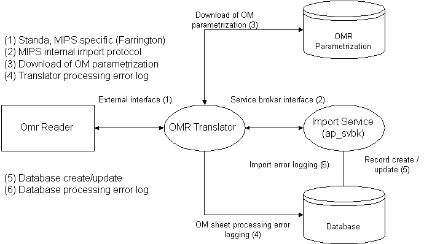

OMR module design
Needed
- OMR Translator (somr or fomr)
- Import module (ap_svbk)

Explanation
- Internal service broker (Import Service): eg omrserver_1
This service will perform the data import. The data itself will be build (more like translated) by the OMR Translator.
- Translator (OMR Translator): eg omr_1
This translator will download the OMR parametrization specified in the genrw database. Using this information, it can and will translate the OMR data into the MIPS internal protocol.
- Fill in omr_1 ExternalInterface
Connection to the OMR reader hardware.
- omr_1 InternalService is omrserver_1
The OMR translator will import its data via this internal service broker.
A word about error database logging
If specified on the command line, logging will be created in the database (genrw::log types). The name of the log type can be set on the OMR Translator command-line startup.
What will be logged:
- OMR Communication errors
e.g. bad data from OMR reader received.
- OMR Translator sheet parse errors
e.g. A certain OM Control was mandatory (e.g. order urgency), but not specified on the sheet.
- MISPL generated errors
From within MISPL, errors can be reported.
- Import errors
e.g. the imported order has no issuer, the issuer in the import message was unknown.
Remarks:
- When database logging is enabled:
The importer will dedicate a separate Log for each importing OMR translator. A log entry will be created per sheet read. For all this to work well, the correct importing translator must be set in the Source tag of the parametrization being made.
e.g. "Source=Axom_1&Class=Order&...".
This can be done using the .TranslatorName MISPL function.
e.g. 'Source=' + .TranslatorName + "&Class=Order&" ...
Log entries examples:
- Example 1
-1
-Container control 'BGRHESUS' is mandatory
(A control node was marked mandatory in the parametrization, but was not available on the sheet read. Correct the sheet.)
-Mark control 'BGRHESUS' is mandatory
(A control node was marked mandatory in the parametrization, but was not available on the sheet read. Correct the sheet.)
-The ObjectTime is not completely accurate !!!!
-Assume it is correct
-Calculated external id
Explanation:
- 1 : Sheet One
- Errors inflicted by the translator
- -Container control 'BGRHESUS' is mandatory
(A control node was marked mandatory in the parametrization, but was not available on the sheet read. Correct the sheet.)
-Mark control 'BGRHESUS' is mandatory
(A control node was marked mandatory in the parametrization, but was not available on the sheet read. Correct the sheet.)
: errors generated by the OM message parser + some advice.
- -The ObjectTime is not completely accurate !!!!
-Assume it is correct
-Calculated external id
: Warnings generated by MISPL .Warning() function.
Caution: The .Warning() functions was used. .Error() was not being used. Thus the database import will proceed, but the sheet will be put into the bad OM Reader tray.
- Example 2
-3
-The ObjectTime is not completely accurate !!!!
-Assume it is correct
-Calculated external id
Class Order
-Could not set issuer (Unknown correspondent)
-Could not set agent (Unknown correspondent)
Explanation:
- 3 : Sheet 3
- -The ObjectTime is not completely accurate !!!!
-Assume it is correct
-Calculated external id
: Warnings generated by MISPL .Warning() function. - Class Order : Orders generated by by the order importer. The 'Log::Verify()' user interface function can be used to open the created/updated databse record for editing.
Caution: The .Warning() functions was used. .Error() was not being used. Thus the database import will proceed, but the sheet will be put into the bad OM Reader tray.
Stop sheet usage
The mispl expression which will close a possibly existing log and open a new one looks like this:
Source=.TranslatorName()&Class=Log&Method=(Mnemonic=Open&ParameterList=(
Destination=(Type=Database)&Type=OMRBatchImport&Process=.TranslatorName()& MinimalSeverity=Info))
The Type 'OMRBatchImport' can be any name and should match the the value of the '-p' OMR command-line option.